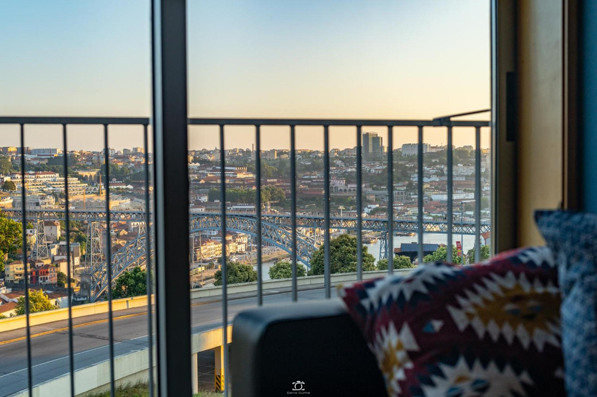
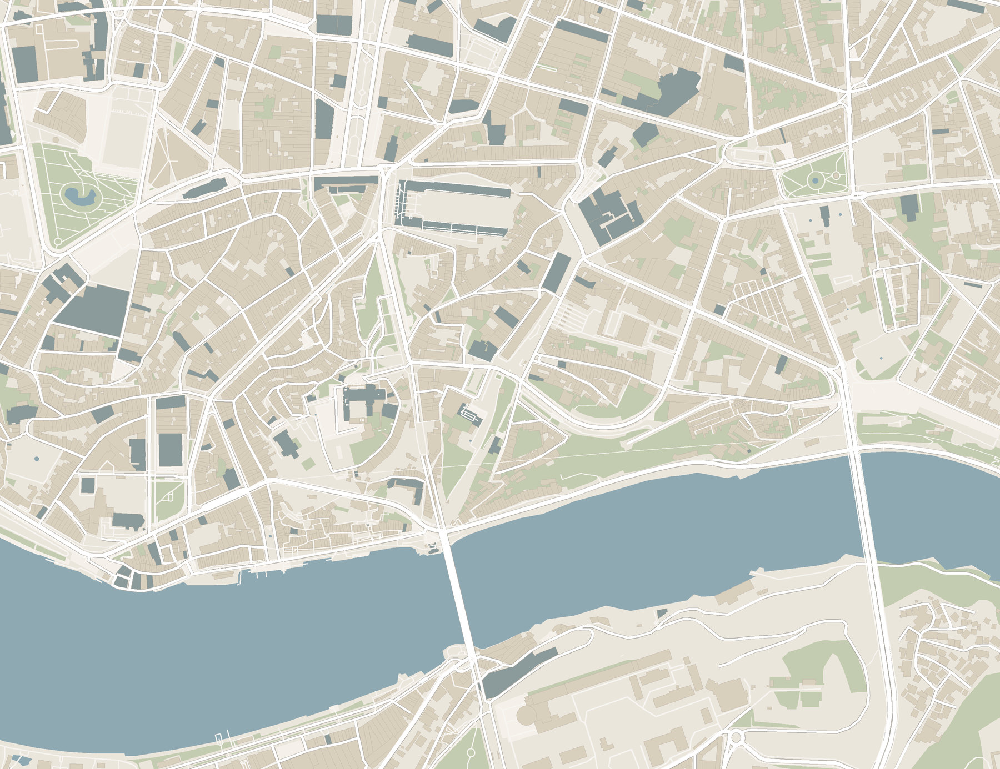
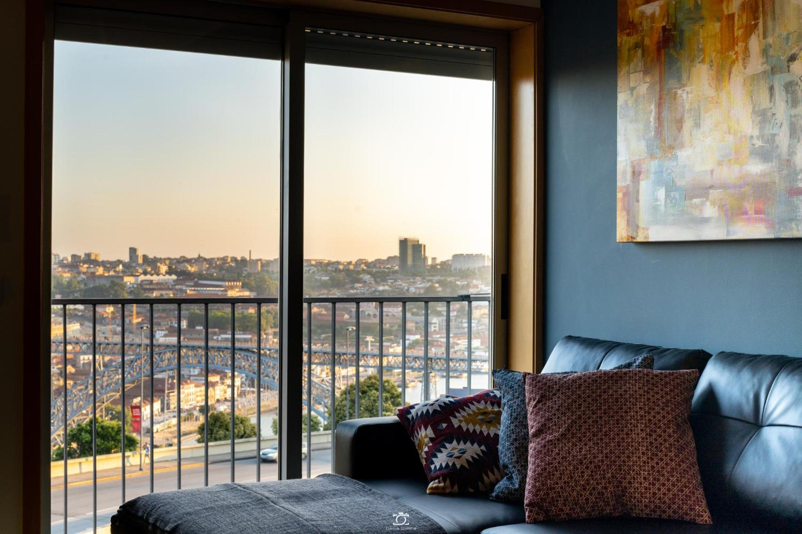
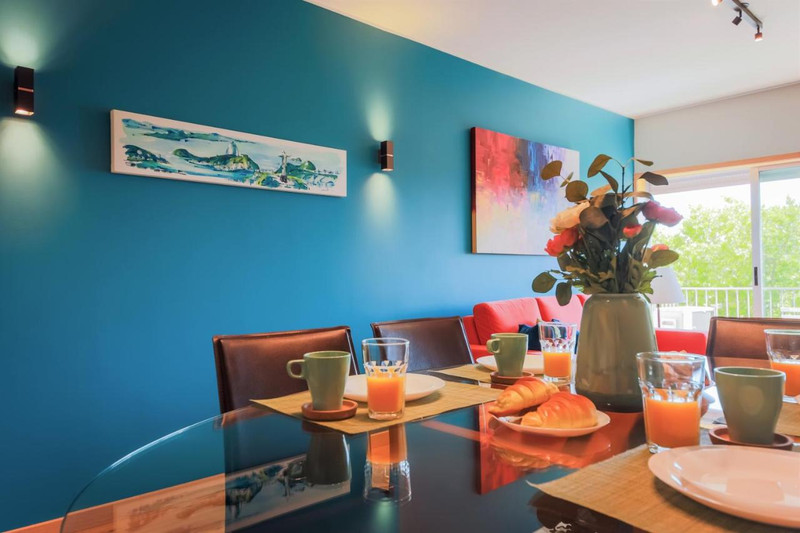

Sé e Fontainhas · Porto
Porto Cathedral
- 4pessoas
- 80 m²de área
- 2quartos
- 1casa de banho
- Vista para o rio
- Wi-Fi gratuito
- Ar condicionado
- Elevador
- Garagem, 10 € por dia
- e mais 7
Dois quartos, o rio à janela.
Um apartamento de 80 m² num 3.º andar com elevador, na Rua do Sol, a 250 m da estação Batalha-Guindais e a 650 m da Ponte Luís I.
Sala e cozinha em espaço aberto, um quarto de casal, um quarto com duas camas e uma casa de banho.
The view of the bridge from each room is amazing.
A casa, divisão a divisão.
01 / 17
O que a casa oferece.
- Vista para o rio
- Wi-Fi gratuito
- Ar condicionado
- Elevador
- Garagem, 10 € por dia
- Cozinha equipada
- Máquina de lavar loiça
- Máquina de lavar roupa
- Máquina de café
- Televisão
- Roupa de cama e toalhas
- Secador de cabelo

Rua do SolPonte Infante Dom HenriqueRua de Mouzinho da SilveiraRua de Alexandre HerculanoRua de Dom João IVPonte Luiz I (tabuleiro superior)Rua de Passos Manuel Sé do PortoEstação de São BentoTorre dos ClérigosRibeiraPraça do Infante Dom HenriqueMJardim do Morro Porto Cathedral 250 mJunto à Sé, por cima do rio.
Rua do Sol, 19, 3.º Dt.º, 4000-527 Porto
- Estação Batalha-Guindais250 m
- Ponte Luís I650 m
- Metro de São Bento700 m
- Ribeira950 m
- Torre dos Clérigos1,1 km
- Aeroporto15 km
Distâncias calculadas pelo Booking.
Como chegarHorários e regras.
- Check-in
- 16:00 – 21:00
- Check-out
- Até às 11:00
- Fumar
- Não
- Festas
- Não
- Animais
- Não
- Silêncio
- 22:00 – 08:00
- Estacionamento
- Garagem a 10 € por dia, com reserva

Até já, no Porto.
Também emBooking.com
Outras casas no Porto.

Cedofeita
Cedofeita Charming Flat
Apartamento T1 · até 2 pessoas
9,5 77 avaliações no Booking Ver a casa
Boavista
Boavista Luxury Villas
Moradia T3 · até 6 pessoas
9,1 170 avaliações no Booking Ver a casa
Sé e Fontainhas
Porto Cathedral II
Apartamento T3
9,0 31 avaliações no Booking Ver no BookingPorto Cathedral 27 fotografias